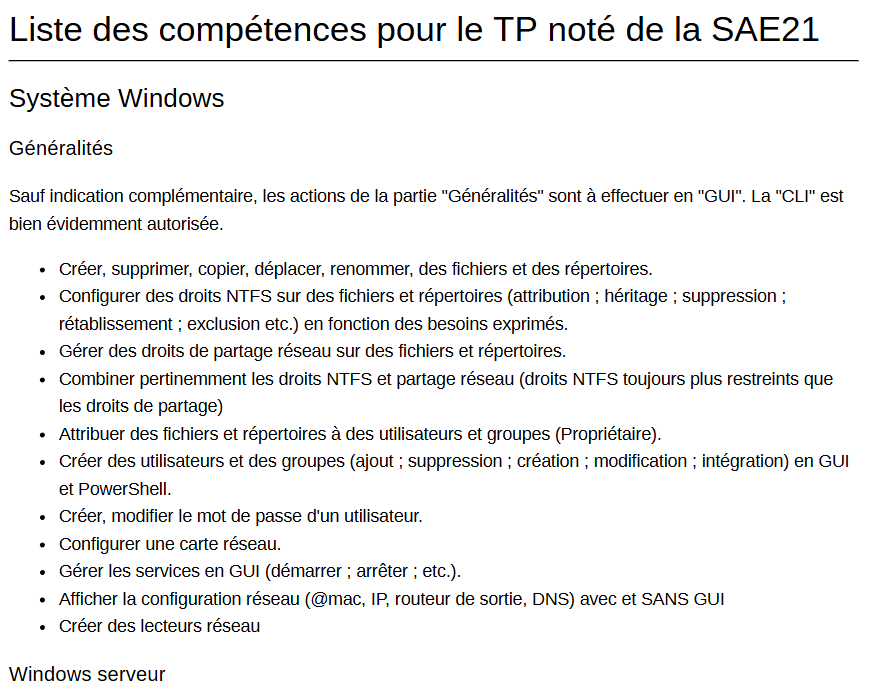

Présentation :
Lors de ce projet nous avons suivi une formation faite par Microsoftde 3heures. De plus, nous avons fait une
formation Cisco NetAcad "Switching and Routing" de 70h. Enfin, sur nos heures de projet en autonomie nous
avons fait un TP d'entraînement sur un environnement Windows Server 2019.
L'objectif était de
configurer des stratégies de groupe (GPO), des unités d'organisation (OU), des
utilisateurs et des groupes. Nous devions également configurer un domaine Active Directory.
Avec ce projet, j'ai appris :
Ma Contribution :
Lors de ce projet j'ai réalisé intégralement et en autonomie le TP d'entraînement sur Windows Server 2019.
De plus, j'ai été rigoureuse dans mon travail lors de la certification CISCO, me permettant d'obtenir
la note de 17/20 à ce QCM.
Enfin, j'ai été une des seule à regarder intégralement les vidéos du cours
sur Active Directory de Microsoft.
Preuves :
La certification CISCO :
La liste des compétences développée grâce à ce projet :
Analyse du projet et auto-évaluation :
Lors de ce projet j'ai appris comment configurer et mettre en place un Windows Server 2019, ce qui pourra
m'être très utile en entreprise ou pour les prochains projets !
J'ai effectué les cours de la
certification CISCO pendant les vacances ce qui m'a permit de me laisser la possibilité de travailler sur le
TP
d'entraînement Windows Server 2019 lors de mes heures de projet.
Je pense refaire cette même
organisation pour les prochains projets car elle m'a permit d'éviter de me retrouver deborder avec une
grande quantité d'informations à retenir à la dernière minute comme ça a pu être le cas pour certains de mes
camarades.